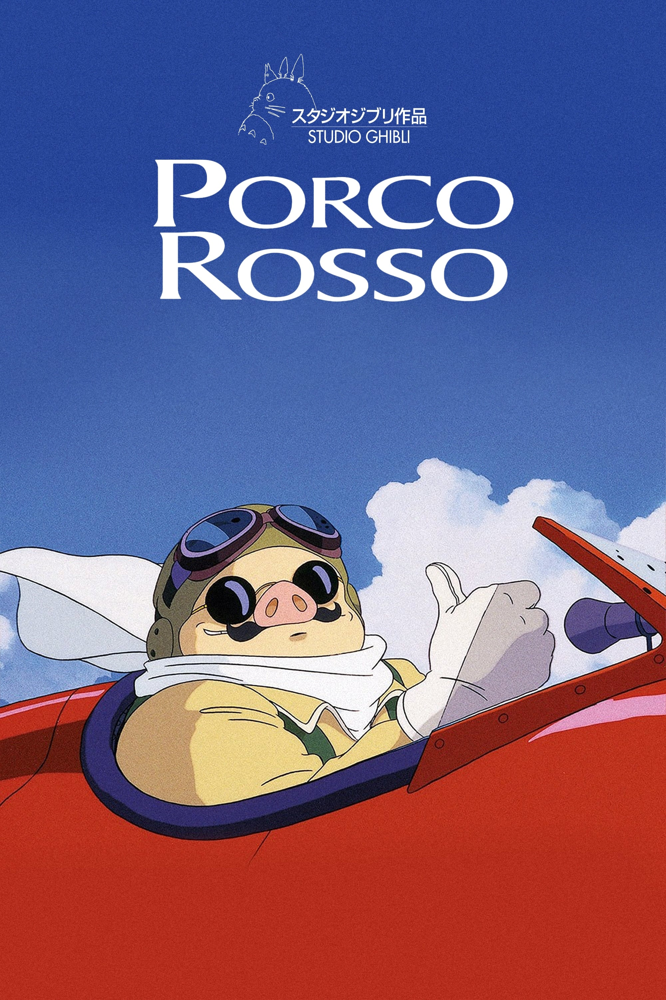
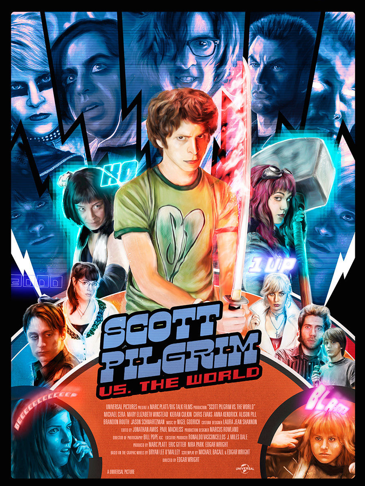

It is about a man named Marco Pagot who was cursed and turned to look like a pig. It is set during the uprising of Fascism in Italy (1920s). He flies his Seaplane in the Adriatic Sea as a Bounty Hunter against Seaplane Pirates. The movie supports Anti-Fascisim and Feminism. For example, Porco explicitly says that he hates Fascisim. I like how he reflects the Sexism that becomes progressive towards Feminism by being convinced by his fellow Mechanic Piccolo who entrusts his granddaugther Fio to help repair his plane when it gets shot down by a foreign hired Pilot from the Pirates. The movie has beautiful music and animation that resonates really well with how peaceful it is flying or intense it is being in a dogfight as depicted in Porco's past from a third person view during World War I.
It is about a young man who is in his young 20s, his name is Scott Pilgrim, starts dating someone named Ramona Flowers. After Scott starts dating her, he has to face the League of Seven Evil Exes who are trying to stop him from getting with Ramona. So if Scott stops all Seven of Ramona's Exes he gets to keep her. What I like about this movie is that Scott and Ramona are both horrible human beings who treated their exes like trash but are oblivious to the damage that they caused to them. So Scott is on a quest of self discovery. And while on this self discovery, the nice small touches of videogame references and elements mixed into the univers of Scott Pilgrim makes it feel natural, nothing feels forced/out of place, it all just makes sense. The music and pacing of the movie make it also entertaining, plus there are some areas within the movie that is way better than the book counter park. For example, there was a part in the book where the fight with one of the Evil Exes was boring but the movie made it more entertaining. Please give Scott Pilgrim a watch, it really is a unique movie that no one else has replicated it in the movie world. The only show equivalent to Scott Pilgrim out of the top of my head is Videogame Highschool by RocketJump.
This movie is on Netflix and it is about World War I from the perspective of Paul. Him and his friends are all excited to join up for the war for Germany. It is a depressing movie that shows how the horrors of war changes someone, how it robs them of their soul. It just shows the Germans vs French in the entire film which is mostly accurate. The moments of peace being away from the frontlines felt surreal. The sound and cries of men being slaughtered by one other as you see how each one becomes brutal for survival is jarring. At one point of the movie you get to see Paul regret what he has become and tries to become human again. Again, it's an artistic masterpiece. I recommend everyone watching it to remember history.